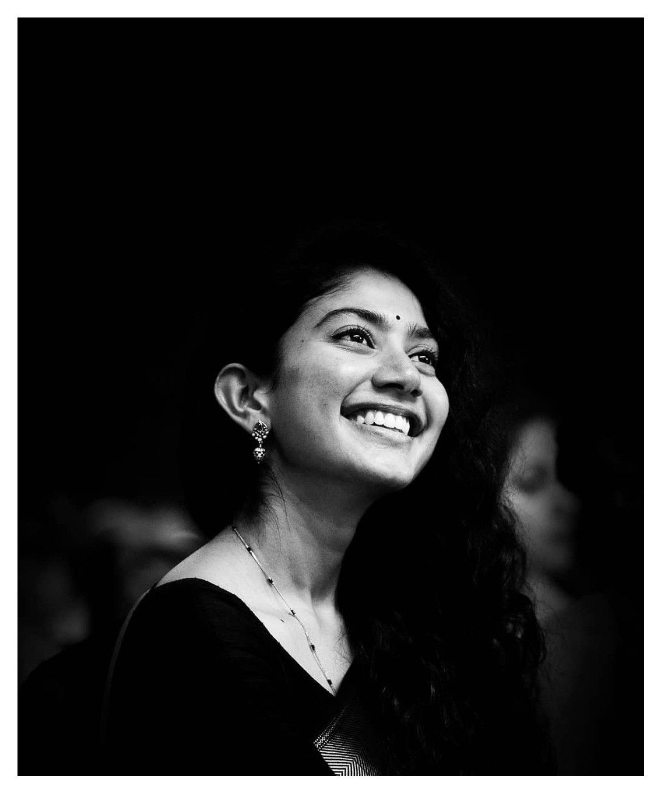

SAIPALLAVI SENTHAMARAI
LADY NATURAL STAR
Father: Senthamarai Kannan
Mother: Radha Kannan
Born on May 9, 1992 in Tamil Nadu
she is best dancer
best actor
AWARDS
- Won Filmfare Award for Best Actress -Fidaa(2017)and Love Story(2021)
- Won Filmfare Critics Award for Best Actress -Shyam Singha Roy (2021)
- for Filmfare Award for Best Actress -Maari
- Indian International Movie Awards (SIIMA)
- Asianet Film Awards
- Won Special Jury Award for Premam (2016)
- Won Most Popular Actress for Kali (2016)
- Won two SIIMA awards
pursuing a medical degree in 2016 from Tbilisi State Medical University, Georgia.
she performed in dance reality show on Vijay TV, Ungalil Yaar Adutha Prabhu Deva in 2008.
Good Talk:
Talented Actress: She's widely praised for her natural acting, ability to portray strong characters, and captivating screen presence. Anupama Chopra, a renowned film critic, even called her a "Trojan Horse" who subverts expectations with her performances [YouTube interview with Sai Pallavi].
Selectivity in Roles: She's known for choosing projects with strong female characters and stories that challenge social norms. This resonates with audiences who appreciate her advocating for progressive portrayals.
Down-to-earth Demeanor: Many reports highlight her humble and grounded personality. This makes her relatable and (mahboob - beloved) among fans.
Bad Talk (Less prevalent, but exists):
Limited Range?: Some critiques suggest she might get typecast in similar roles due to her natural charm and girl-next-door persona.
Focus on Looks: A small portion of online discussions might objectify her beauty, overshadowing her acting abilities.
Limited Commercial Appeal: While commercially successful, some might argue she hasn't reached the level of box office domination achieved by a few other actresses.